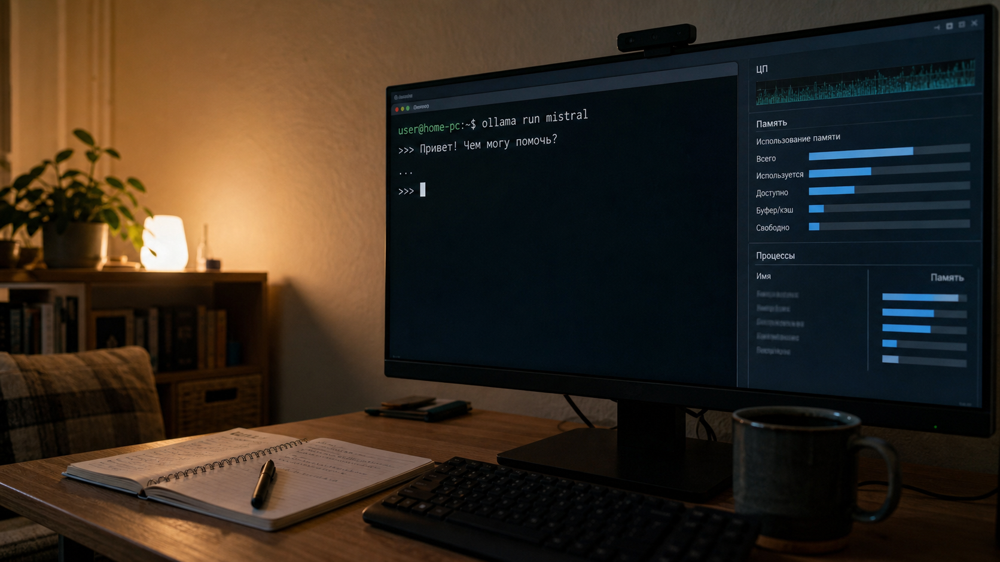

Практическое руководство
Какую нейросеть потянет ваш компьютер: выбираем модель Ollama для 8, 16 и 32 ГБ памяти
Локальная нейросеть работает прямо на компьютере, но неверное сочетание размера модели, памяти и контекстного окна превращает запуск в ожидание. Разберём безопасные стартовые варианты без выдуманных тестов.

Сначала проверьте свободную память
Для локальной LLM важны видеопамять GPU и обычная оперативная память. Если модель помещается в видеопамять, ответ обычно формируется быстрее. При переносе части вычислений на CPU и RAM запуск остаётся возможным, но скорость снижается.
Размер файла модели — нижняя граница, а не полный расход памяти. Дополнительное место требуется контексту и служебным данным. Документация Ollama указывает, что увеличение context length повышает потребление памяти. После запуска проверьте размещение:
ollama psСтолбец PROCESSOR покажет, работает ли модель на GPU целиком или частично выгружена на CPU.
Что выбирать при 8 ГБ
Начните с малых моделей. В библиотеке Ollama файл llama3.2:1b занимает около 1,3 ГБ, а llama3.2:3b — около 2 ГБ. У Qwen 2.5 варианты 0.5B, 1.5B и 3B занимают примерно 398 МБ, 986 МБ и 1,9 ГБ.
Для компьютера с 8 ГБ RAM это безопасная стартовая зона, особенно со встроенной графикой. Закройте тяжёлые приложения и не начинайте с максимального контекста:
ollama run llama3.2:3bЕсли система активно использует swap, перейдите на llama3.2:1b или qwen2.5:1.5b.
Что выбирать при 16 ГБ
При 16 ГБ RAM можно пробовать Qwen 2.5 7B: опубликованный Q4-файл занимает около 4,7 ГБ. Запас остаётся, но длинный контекст и открытые приложения способны быстро его съесть.
ollama run qwen2.5:7bПосле первого ответа выполните ollama ps. Работа в основном на CPU не означает ошибку, но увеличивает ожидание.
Что выбирать при 32 ГБ
Для 32 ГБ RAM разумный кандидат — qwen2.5:14b: его Q4-файл занимает около 9 ГБ. Скорость всё равно зависит от GPU, пропускной способности памяти и CPU-offload.
ollama run qwen2.5:14bВариант 32B занимает около 20 ГБ только как файл модели и оставляет мало запаса, поэтому для первого опыта это плохая отправная точка.
Честная проверка за десять минут
- Запишите свободную RAM и VRAM до запуска.
- Не меняйте context length между повторами.
- Дайте моделям один и тот же реальный запрос.
- Зафиксируйте время до первого текста, длительность ответа и вывод
ollama ps. - Повторите на соседней по размеру модели.
- Выберите модель, которая отвечает приемлемо быстро и не заставляет систему постоянно обращаться к swap.
Стартовый ориентир: 8 ГБ — 1B–3B; 16 ГБ — 3B–7B; 32 ГБ — 7B–14B. Это консервативная инженерная рекомендация, а не гарантия одинаковой скорости.
Главная ошибка — смотреть только на параметры
Компьютер для локальной нейросети выбирают с учётом квантования, контекста, GPU, свободной RAM и задачи. Маленькая модель, которая стабильно отвечает, полезнее большой модели, превращающей каждый запрос в ожидание.
Материал подготовлен с использованием ИИ, проверен по официальным страницам Ollama, согласован с NotebookLM и отредактирован человеком. Напишите в комментариях объём RAM, видеокарту и задачу — это поможет подобрать стартовую модель.
Источники
Частые вопросы и ответы (FAQ)
❓ Какую ключевую задачу решает подход из материала «Какую нейросеть потянет ваш компьютер: выбираем модель Ollama для 8, 16 и 32 ГБ памяти»?
Материал разбирает сценарий практического применения: Локальная нейросеть работает прямо на компьютере, но неверное сочетание размера модели, памяти и контекстного окна превращает запуск в ожидание. Разберём безопасные стартовые варианты без выдуманных тестов.. Это позволяет исключить субъективные оценки, протестировать инструмент на реальной рабочей задаче и принять взвешенное решение о внедрении.
❓ Как протестировать решение перед запуском в рабочий контур?
Необходимо зафиксировать исходные требования, сценарий тестирования и контрольные метрики (время выполнения, число ручных правок, стабильность тестов). Каждому прогону присваивается идентификатор без подмены измерений модельными выводами.
❓ Как контролировать риски и окупаемость AI-инструментов?
Следует изолировать доступы инструментов по принципу наименьших привилегий, отслеживать расход токенов и предусмотреть понятный порог эскалации на человека при отклонении от регламента.